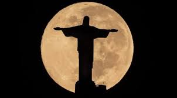

Curiosidades

Altura imponente: O Cristo Redentor tem uma altura impressionante de 30 metros, o que equivale a um prédio de 10 andares. Sua envergadura, de uma mão à outra, mede 28 metros.
Peso estimado: A estátua é feita de concreto armado e revestida com pedra-sabão. Estima-se que o Cristo Redentor pese cerca de 635 toneladas.
Localização panorâmica: Localizado no topo do morro do Corcovado, a 710 metros acima do nível do mar, o Cristo Redentor oferece uma vista deslumbrante do Rio de Janeiro. É possível contemplar a cidade, a Baía de Guanabara, as praias e até mesmo o Pão de Açúcar a partir desse ponto privilegiado.
Símbolo de união e paz: O Cristo Redentor é amplamente reconhecido como um símbolo de paz e união. Seus braços estendidos representam um gesto de acolhimento e abraço a toda a humanidade.
Tecnologia de iluminação: Em 2008, foram instalados sistemas de iluminação de LED no Cristo Redentor, permitindo que a estátua mude de cores durante a noite. Essa tecnologia permite que o monumento seja iluminado de forma personalizada para celebrar eventos e datas especiais.
Pontos turísticos próximos: Além de ser uma atração turística por si só, o Cristo Redentor está localizado próximo a outros pontos turísticos famosos do Rio de Janeiro, como o Pão de Açúcar e as praias de Copacabana e Ipanema. Isso permite que os visitantes aproveitem ao máximo sua visita à cidade.
Reconhecimento mundial: Em 2007, o Cristo Redentor foi eleito uma das Sete Maravilhas do Mundo Moderno em uma votação global realizada pela New7Wonders Foundation. Essa conquista aumentou ainda mais sua visibilidade internacional.
Turismo significativo: O Cristo Redentor é um dos principais pontos turísticos do Brasil, atraindo milhões de visitantes anualmente. Sua popularidade é tão grande que se tornou um ícone do turismo brasileiro e é considerado uma parada obrigatória para os visitantes do Rio de Janeiro.
Cenário para eventos especiais: A localização e a imponência do Cristo Redentor o tornam um cenário impressionante para eventos especiais. A estátua já foi palco de casamentos, celebrações religiosas, apresentações musicais e outros eventos culturais.
Impacto cultural e religioso: O Cristo Redentor desempenha um papel fundamental na cultura e na religiosidade do Brasil. A estátua é frequentemente associada à identidade e à fé do povo brasileiro, além de ser um símbolo do Rio de Janeiro em todo o mundo.
O Cristo Redentor continua a encantar e inspirar pessoas de todas as partes do mundo, com sua majestosa presença e seu significado profundo. Sua beleza arquitetônica, sua localização privilegiada e sua mensagem de paz tornam-no um monumento verdadeiramente fascinante.
eventos especiais que ocorreram no local
Celebrações religiosas: O Cristo Redentor é palco de importantes celebrações religiosas, como a Missa de Natal e a Via-Sacra da Sexta-Feira Santa. Milhares de fiéis se reúnem ao redor da estátua para participar desses eventos religiosos significativos.
Casamentos: O local do Cristo Redentor também é escolhido por casais que desejam realizar casamentos com uma vista deslumbrante. Com a cidade do Rio de Janeiro ao fundo, a estátua do Cristo Redentor proporciona um cenário único e memorável para uma cerimônia de casamento.
Concertos musicais: O Cristo Redentor já foi palco de concertos musicais de renome. Artistas nacionais e internacionais se apresentaram nas proximidades da estátua, aproveitando a atmosfera especial e a vista panorâmica para criar performances únicas.
Eventos esportivos: O local também já foi utilizado para a realização de eventos esportivos. Por exemplo, em 2014, uma prova de corrida chamada "Desafio ao Cristo" levou corredores a percorrerem a trilha até o topo do morro do Corcovado, passando pelo Cristo Redentor.
Festividades especiais: O Cristo Redentor é iluminado de forma especial em datas comemorativas e eventos especiais. Por exemplo, nas celebrações do Ano-Novo, a estátua é iluminada com cores festivas e se torna um dos principais pontos de observação dos fogos de artifício na cidade do Rio de Janeiro.
Esses são apenas alguns exemplos de eventos especiais que ocorreram no local do Cristo Redentor. Sua localização imponente e seu simbolismo único proporcionam um cenário memorável para uma variedade de ocasiões e celebrações.
Histórias interessantes relacionadas a personalidades famosas
Frank Sinatra: Durante sua visita ao Rio de Janeiro em 1980, o renomado cantor Frank Sinatra expressou o desejo de conhecer o Cristo Redentor. Após chegar ao topo do morro do Corcovado, Sinatra ficou tão impressionado com a vista que exclamou: "É a coisa mais linda que já vi na minha vida!". Sua visita ao monumento se tornou um momento memorável na história do Cristo Redentor.
Princess Diana: Em 1991, a Princesa Diana, conhecida como a Princesa de Gales, visitou o Cristo Redentor durante sua estadia no Brasil. Sua visita ao monumento atraiu muita atenção da mídia e dos fãs. A Princesa Diana ficou encantada com a beleza e a imponência da estátua, tornando sua visita um momento marcante.
Pelé: O lendário jogador de futebol brasileiro, Edson Arantes do Nascimento, mais conhecido como Pelé, também teve um encontro especial com o Cristo Redentor. Durante sua carreira, Pelé visitou o monumento várias vezes para expressar sua devoção religiosa e agradecer por seu sucesso no futebol. Sua conexão com o Cristo Redentor se tornou um símbolo de sua identidade brasileira e de sua fé.
Michael Jackson: Durante sua turnê no Brasil em 1996, o famoso cantor Michael Jackson fez questão de visitar o Cristo Redentor. Ele subiu ao topo do morro do Corcovado acompanhado de sua equipe e passou um tempo admirando a vista panorâmica do monumento. Sua visita gerou grande comoção entre os fãs e a mídia.
Papa Francisco: Em 2013, o Papa Francisco visitou o Brasil para a Jornada Mundial da Juventude, um evento católico internacional. Durante sua estadia, ele fez uma visita ao Cristo Redentor para orar e abençoar a cidade do Rio de Janeiro. Sua presença no monumento atraiu uma multidão de fiéis e reforçou a importância espiritual do Cristo Redentor.
Essas histórias destacam como o Cristo Redentor atraiu personalidades famosas ao longo dos anos, seja por sua beleza, seu significado religioso ou seu status icônico. Essas visitas especiais demonstram a influência e a atração duradoura que o monumento exerce sobre pessoas de todo o mundo.